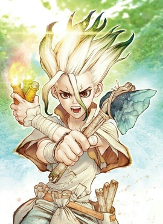

Personagens
Petrificados
Senku Ishigami (石神 千空 Ishigami Senku?)
Interpretado por: Yūsuke Kobayashi (japonês); Felipe Grinnan

Senku é altamente inteligente e se destaca em vários campos da ciência, com um amor especial pela astronomia e pela exploração espacial. Depois de despertar no "Mundo de Pedra", ele tenta reviver a humanidade reinventando sua tecnologia perdida e descobrindo uma "cura" para a petrificação. Embora um pouco arrogante, ele é realmente muito nobre e de bom coração, vendo a ciência como um meio para elevar todas as pessoas e tem uma fé inabalável em seus amigos.
Taiju Ōki (大木 大樹 Ōki Taiju?)
Interpretado por: Makoto Furukawa (japonês); Alex Minei
O melhor amigo de Senku, a quem Senku se refere como um "grandalhão" ou "músculos". Ele tem força incrível e resistência aparentemente ilimitada, mas é um pacifista que nunca deu um soco em sua vida. Ele está apaixonado por Yuzuriha e fará de tudo para cuidar dela, especialmente quando ela estiver em perigo.
Yuzuriha Ogawa (小川 杠 Ogawa Yuzuriha?)
Interpretada por: Kana Ichinose (japonês); Isabella Guarnieri
O interesse amoroso de Taiju, uma jovem alegre e de bom coração. Ela se matriculou no clube de artesanato de seu colégio para perseguir seu objetivo de se tornar uma estilista de moda e é excepcionalmente talentosa em artes como costura e trabalho de roupas. Com o passar dos anos depois de ser petrificada, ela é salva por Senku e Taiju e agora viaja com Taiju para descobrir os planos de Tsukasa, após a suposta morte de Senku. Ela já sabe que Taiju gosta dela, mas ele não diz e espera dizer depois de restaurar a civilização que foi petrificada e esta aguarda ansiosamente até que Taiju possa confessar a ela.
Tsukasa Shishio (獅子王 司 Shishiō Tsukasa?)
Interpretado por: Yuichi Nakamura (japonês); Arthur Machado
Um jovem que chegou à fama nas artes marciais mistas como "O Primata Mais Forte do Ensino Médio". Ele se ressente de adultos, vendo-os como uma influência gananciosa e corrupta sobre o mundo, e assim quer criar uma nova sociedade no "Mundo de Pedra" apenas revivendo os jovens. Tsukasa serve como o principal antagonista dos primeiros arcos da história do mangá. Ele se empenhava em ser um Superstar para encontrar uma cura para sua irmã Mirai, que estava na cama de hospital por sofrer morte encefálica, estando viva, mas em estado vegetativo. Senku sugere se usar o líquido milagroso, poderia trazer sua irmã de volta que estava na forma de pedra. Contudo, Hyoga o trai ferindo, mas é salvo por Senku e os dois se únem para parar Hyoga e assim o fazem. Contudo, Tsukasa sofre um ferimento fatal e Senku congela Tsukasa, num estado de sono congelado, até poder salvá-lo de sua animação suspensa.
Chrome é um é o "feiticeiro" da Vila Ishigami e amigo de Senku, um jovem que tem um grande conhecimento das ciências. Chrome é um personagem naturalmente curioso e que gosta de experimentar coisas novas, mesmo que não entenda completamente como funcionam. Senku ensina Chrome sobre ciência, e Chrome torna-se o cientista da vila e o braço direito de Senku no Reino da Ciência. Chrome é um dos Cinco Comandantes Sábios e é frequentemente visto com uma expressão alegre. O seu equipamento habitual consiste numa camisa azul escura de manga curta, calças a combinar, um cinto de corda e dois sacos de corpo cruzados que contêm materiais que recolheu.